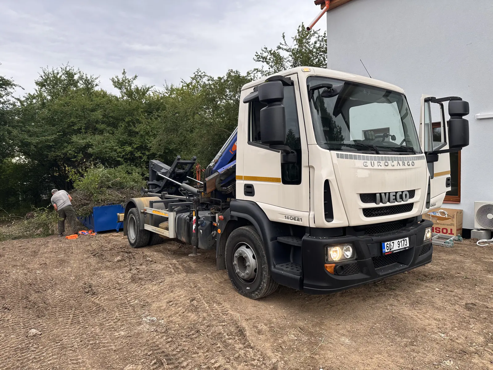

Popíšete zakázku
Vyberete službu, místo a přibližný termín.
Přímá domluva · cena předem · vlastní technika
Pošlete adresu a fotku. Řeknu vám správný postup, cenu i termín bez zbytečných odhadů od stolu.

Co potřebujete vyřešit?
Začněte nejbližší možností. Přesný postup, velikost i techniku doplním podle fotky, adresy a přístupu.
Výběrem nic neobjednáváte. Jen urychlíte odpověď a přesnější cenu.
Pokračovat k ceně Rodinný dům · Praha-západ
Rodinný dům · Praha-západ
Skutečná realizace
Ráno přistavení, průběžná domluva po telefonu a odvoz ještě odpoledne. Zakázku od prvního hovoru řešíte přímo s člověkem, který za ni odpovídá.
Jak to funguje
Vyberete službu, místo a přibližný termín.
Ozvu se přímo a zkontroluji důležité detaily.
Bez překvapení, zbytečného čekání a předávání.
Služby
Řeším rekonstrukce, výkopy, vyklízení, zahrady i dovoz materiálu. U lehkého odpadu rozhoduje objem, u suti, betonu a zeminy hlavně hmotnost. Proto doporučuju službu a vhodný postup podle reálné zakázky, ne podle univerzní tabulky.

Na stavbu, dvůr nebo k domu. Po naplnění kontejner zase odvezu.
Jak probíhá přistavení
Čistá suť, beton, zemina, dřevo, bioodpad i směsný stavební odpad po předchozí domluvě.
Co lze odvézt
Písek, štěrk, kačírek, recyklát, zemina a beton podle dostupnosti, místa složení a reálného přístupu.
Vybrat materiál
Výkopy základů, bazénů a jezírek, rovnání terénu a odbahnění — stroje do 5 t.
Zemní práce a technikaCena
Pošlete obec, materiál, odhad množství a fotku přístupu. Řeknu vám, co je v ceně, co ji může změnit a jestli jde o jednoduchou, běžnou nebo náročnější zakázku.
Lokality
Nejsilnější a nejrychlejší směr je okolí Svárova u Unhoště, Nučic u Rudné, Kladenska, Hostivice a Prahy-západ. Prahu, Berounsko, Rakovnicko a další obce ve Středočeském kraji řeším podle konkrétní trasy.
Svárov, Unhošť, Nučice, Rudná, Praha-západ, Kladno, Hostivice, Beroun, Praha a okolí.
Přehled lokalitNejbližší lokality

Kontakt
Nejrychlejší je telefon. Pro cenu potřebuji adresu, materiál, odhad množství, termín a informaci, kam se auto dostane. Fotka vjezdu nebo hromady většinou rozhodne rychleji než dlouhý popis.
Nejrychleji obsluhuji Svárov, Unhošť, Nučice, Rudnou, Hostivici, Kladno a Prahu-západ. Prahu a další směry řeším podle konkrétní trasy.
Časté dotazy
Cena záleží na lokalitě, vzdálenosti, nákladu, množství, skládkovném, DPH a přístupu pro auto. Před výjezdem si potvrdíme, co je v ceně zahrnuté a co by ji mohlo změnit.
Nejbližší oblast je Svárov u Unhoště, Unhošť, Nučice, Rudná, Kladensko, Hostivice a Praha-západ. Jezdím ale i do Prahy a dalších částí Středočeského kraje podle trasy.
Stačí obec nebo adresa, co se poveze, odhad množství, přístup pro auto a fotka místa. Když něco chybí, doplníme to po telefonu.
Ideálně na vlastní pozemek, dvůr nebo stavbu. Pokud má stát na ulici nebo veřejné komunikaci, může být potřeba povolení od obce nebo městské části.
Raději ne bez domluvy. Smíchaný odpad může být dražší na likvidaci. Když vím složení předem, navrhnu cenově rozumnější řešení.
Ano. Řeším zemní práce, výkopy, odvoz zeminy a dovoz písku, štěrku, kačírku, recyklátu, zeminy nebo betonu podle dostupnosti a místa složení.